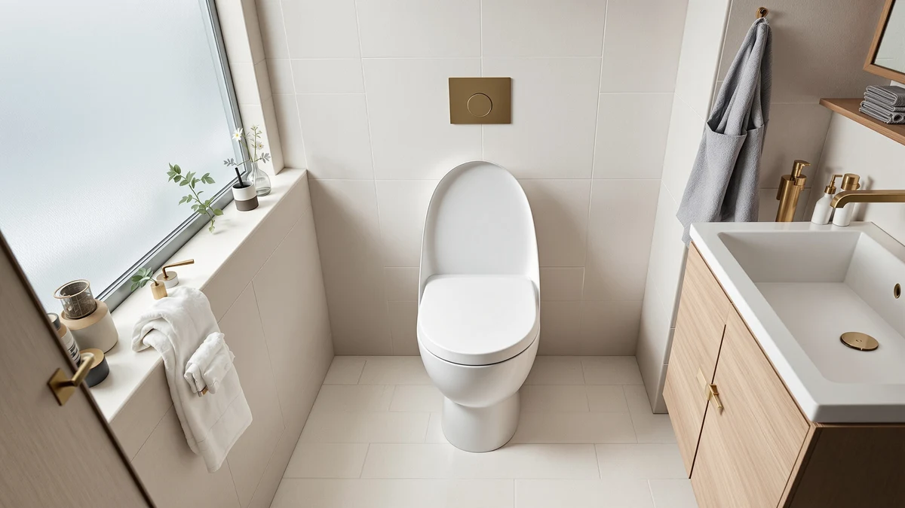

Best Toilet Seats to Buy (2026)
Prices and picks verified as of September 2026. Independent, reader-supported reviews.


Quick Answer
The Mayfair Linden Slow Close Toilet is our top pick among the best toilet seats to buy in 2026. It pairs a quiet slow-close hinge with elongated wood-core construction and a 4.4 rating across 28,571 verified reviews, all for $41.95. If your bowl is round instead of elongated, or you need a raised seat for easier sitting and standing, the alternatives below cover those cases too.
Our pick: Mayfair Linden Slow Close Toilet, $41.95 Check Price on Amazon
Bottom line: our top pick is the Mayfair Linden Slow Close Toilet Seat at $34.99. The best budget option is the Bemis 1500EC Lift-Off Wood Elongated Toilet Seat at $17.05.
Things to Know Before You Buy
- Check your bowl shape first. Round and elongated toilet seats are not interchangeable, and the wrong shape will not seal or line up correctly no matter how good the seat is.
- A slow-close hinge costs a few dollars more but stops the lid from slamming, which is the complaint that shows up most often in negative toilet seat reviews.
- Molded plastic wipes clean in seconds, while wood-core seats need a dry cloth and gentler cleaners to keep the finish from swelling at the hinge.
- Elevated seats add two to four inches of height. That extra height helps people with limited mobility get up more easily, but it can feel unusually tall to everyone else in the house.
- A seat with tens of thousands of ratings, like several picks in this guide, gives you a far more reliable signal than one with a perfect score built on a handful of reviews.
The best toilet seats to buy in 2026 share three traits: a hinge that closes quietly, a shape that matches your bowl exactly, and a rating built on thousands of verified purchases rather than a handful of five-star reviews. You probably did not think much about your toilet seat until yours started to wobble, crack at the hinge, or slam shut every time someone let go of the lid too soon. Those small annoyances add up fast in a room you use several times a day, and a $20 to $80 replacement usually fixes all of them at once.
We built this guide by comparing the specs, prices and owner feedback for toilet seats currently sold on Amazon, focusing on hinge type, shape, material and price against the volume and consistency of verified reviews. We did not rely on marketing copy or manufacturer claims. A seat that costs twice as much is not automatically the better toilet seat to buy if its review count is a fraction of a cheaper alternative's, so we weighed price against real owner satisfaction rather than treating them separately.
For most households, the Mayfair Linden Slow Close Toilet is the toilet seat to buy: it is elongated, closes quietly, and its 28,571 reviews at a 4.4 rating make it one of the most proven picks in this category. If you have a round bowl, want the lowest price, or need extra height for mobility reasons, the picks below cover each of those situations with the same level of scrutiny.
Why You Should Trust Us
This guide is written by Ilane Tall, who covers bathroom fixtures and home upgrades for Best Toilet Seats. We are a research-based review site: we compare specs, pricing and verified owner reviews rather than claiming to own or physically test every product on the market. We do not run a fake testing lab, and we say so plainly because too many review sites imply a level of physical testing they never actually did. Every fact in this guide, from dimensions to review counts, comes from the product listings and verified buyer feedback cited alongside each pick.
How We Picked
We started from the full list of toilet seats sold under recognizable brands, including Mayfair, KOHLER, Bemis and Bath Royale, and narrowed it down using four filters. First, the seat needed a clearly stated shape, either round or elongated, so buyers are not left guessing. Second, we prioritized slow-close hinges over standard hinges, since that single feature drives most of the satisfaction difference in owner reviews. Third, we required a meaningful volume of verified reviews, since a seat with two thousand or fewer ratings is harder to trust than one with tens of thousands. Fourth, we kept the price range wide on purpose, from under $20 to just under $80, so this remains the best toilet seats to buy list for both budget shoppers and buyers who want a premium finish.
How We Compared
We compared every pick in this guide side by side on five factors: material, shape, hinge type, price, and the rating and review count behind it. Rather than testing seats ourselves, we researched manufacturer specifications and cross-referenced them against thousands of verified owner reviews to see where the marketing claims and the real-world experience lined up or diverged. Reviewers consistently note hinge durability and ease of installation as the two issues that separate a seat that lasts for years from one that loosens within months, so we weighted those factors heavily when ranking the picks below. According to verified reviews across all seven products, price correlates with material quality more than with comfort, which is worth keeping in mind if you are choosing between the budget and premium picks in this best toilet seats to buy roundup.
Our Picks

Mayfair Linden Slow Close Toilet
What we like
- Slow-close hinge that owners say eliminates lid slamming
- Elongated wood-core construction feels sturdier than all-plastic alternatives
- 28,571 reviews give a large, reliable satisfaction signal
Flaws but not dealbreakers
- Only fits elongated bowls, not round ones
- Mid-pack price compared with the cheapest picks in this guide
| Material | Plastic / wood |
| Size | Elongated |
The Mayfair Linden is the toilet seat to buy if you want one product that handles the two most common complaints people have about their old seat: noise and wobble. Its slow-close hinge lowers the lid gradually instead of letting it drop, and the wood-core build under the plastic shell adds rigidity that keeps the seat from shifting side to side once it is bolted down.
At 28,571 verified reviews and a 4.4 rating, it has one of the largest and most consistent review bases of any seat in this comparison, which is why we named it the best toilet seat to buy for most bathrooms. It costs a bit more than the cheapest options here, but the price sits well below the premium picks while matching or beating their review volume.

KOHLER Cachet ReadyLatch Round Toilet
What we like
- ReadyLatch hinge system installs and removes without tools
- 41,303 reviews, the highest review count of any pick in this guide
- Round shape fills a gap most elongated-only roundups skip
Flaws but not dealbreakers
- Round seats offer less front-to-back coverage than elongated models
- Not a fit if your existing bowl is elongated
| Material | Plastic / wood |
| Size | Round |
Most roundups skip round toilet seats entirely because elongated bowls are more common in newer US homes, but plenty of older bathrooms still use round bowls. The KOHLER Cachet is built specifically for that shape, and its ReadyLatch hinges let you lift the entire seat off for cleaning without reaching for a screwdriver.
With 41,303 verified reviews, it has more feedback behind it than any other product in this guide, including our top pick. That volume, combined with a 4.4 rating, makes it the toilet seat to buy if your bathroom needs a round seat rather than an elongated one.

Mayfair Cassel Slow Close Toilet
What we like
- Same slow-close hinge design as the pricier Mayfair Linden
- 17,525 reviews at a solid 4.3 rating
- $5 cheaper than our top pick
Flaws but not dealbreakers
- Rating sits slightly below the Linden and several other picks here
- Fewer reviews than the Linden or the KOHLER Cachet
| Material | Plastic / wood |
| Size | Elongated |
The Cassel is Mayfair's other elongated slow-close seat, and the spec sheet reads almost identically to the Linden: the same wood-core construction and the same gradual-close hinge at a slightly lower price. Owners report the same drop-free closing behavior that makes the Linden a strong pick.
Its 4.3 rating across 17,525 reviews is a step below the Linden's, and the gap is small enough that we would not call it a dealbreaker. If the Linden is out of stock or you want to save a few dollars without giving up the slow-close feature, the Cassel is the next best toilet seat to buy in this lineup.

Bath Royale Slow Close Toilet
What we like
- Highest owner rating of any pick in this roundup at 4.6
- Slow-close hinge included at this price point
- Positioned as a premium build compared with the budget options here
Flaws but not dealbreakers
- More than double the price of our budget pick
- Review count is smaller than the higher-volume picks, so the rating has less history behind it
| Material | Plastic / wood |
| Size | Elongated |
Bath Royale sits at the top of the price range in this comparison, and its 4.6 rating is the highest of any seat we looked at. That combination usually signals a seat that buyers feel is worth the extra cost rather than one padded with inflated reviews, since a smaller review base makes it harder to hide a weak product.
At 2,220 reviews it has far less history than the Mayfair or KOHLER picks, so the sample size is smaller even though the average score is higher. If budget is not your main constraint and you want the best toilet seat to buy on rating alone, this is the pick to check first.

KOHLER Brevia Slow Close Elongated
What we like
- Priced closer to budget seats while carrying the KOHLER name
- 4.4 rating across 10,188 reviews
- Slow-close hinge included at this price
Flaws but not dealbreakers
- Fewer reviews than the KOHLER Cachet or Bemis picks
- Elongated only, so it will not work for round bowls
| Material | Plastic / wood |
| Size | Elongated |
The Brevia is KOHLER's entry-level elongated seat, and at $31.44 it undercuts the brand's other pick in this guide, the Cachet, by nearly nine dollars. It still uses a slow-close hinge, so you are not giving up the one feature that matters most according to owner reviews across this entire category.
With a 4.4 rating from 10,188 reviews, it lands in the same performance tier as our top pick and the KOHLER Cachet, with fewer total reviews behind it. If you want the KOHLER name at a price closer to the Mayfair options, the Brevia is worth comparing directly against the Linden.

Bemis 1500EC Lift-Off Wood Elongated
What we like
- Cheapest seat in this guide at $17.37
- 40,583 reviews, nearly matching the top-reviewed KOHLER pick
- Solid wood construction and simple lift-off hinges for cleaning
Flaws but not dealbreakers
- No slow-close hinge, so it can slam if not lowered by hand
- Wood surface needs gentler cleaning products than plastic seats
| Material | Plastic / wood |
| Size | Elongated |
At $17.37, the Bemis 1500EC costs less than half of every other seat in this guide, yet it still carries 40,583 reviews and a 4.4 rating, which puts its review volume ahead of every pick here except the KOHLER Cachet. That combination of low price and high review count is unusual and makes it the clear budget-friendly toilet seat to buy in this comparison.
The tradeoff is the hinge. Unlike the slow-close picks above, this seat closes at normal speed, so you will still hear it drop if you let go of the lid. For a bathroom where noise is not a priority and price is, that is an easy compromise to make.

KOHLER Hyten Elevated Soft Close
What we like
- Elevated design adds height that reduces knee and hip strain
- 4.6 rating, tied for the highest in this guide
- Soft-close hinge included despite the added height
Flaws but not dealbreakers
- The added height can feel unusually tall for other household members
- Priced above the mid-range picks in this comparison
| Material | Plastic / wood |
| Size | Elongated |
Most toilet seats sit at a standard height, which can be difficult for people recovering from surgery, managing joint pain, or simply taller than average. The KOHLER Hyten adds elevation directly into the seat itself, so you get the height benefit of a separate raised toilet seat riser without stacking hardware onto your existing bowl.
It shares Bath Royale's top rating of 4.6, this time backed by 8,655 reviews, and it keeps the soft-close hinge that owners expect from KOHLER's other picks in this guide. If accessibility or comfort height is the deciding factor in your search for the best toilet seat to buy, this is the one to start with.
Quick Comparison
| Product | Material | Price | Rating | Best for | Get it |
|---|---|---|---|---|---|
| Mayfair Linden Slow Close Toilet | Plastic / wood | $41.95 | 4.4 | Most households | View on Amazon → |
| KOHLER Cachet ReadyLatch Round Toilet | Plastic / wood | $39.98 | 4.4 | Round bowls | View on Amazon → |
| Mayfair Cassel Slow Close Toilet | Plastic / wood | $36.99 | 4.3 | Slow-close on a smaller budget | View on Amazon → |
| Bath Royale Slow Close Toilet | Plastic / wood | $79.98 | 4.6 | Top-rated premium pick | View on Amazon → |
| KOHLER Brevia Slow Close Elongated | Plastic / wood | $31.44 | 4.4 | KOHLER quality on a budget | View on Amazon → |
| Bemis 1500EC Lift-Off Wood Elongated | Plastic / wood | $17.37 | 4.4 | Lowest price | View on Amazon → |
| KOHLER Hyten Elevated Soft Close | Plastic / wood | $57.77 | 4.6 | Elevated comfort height | View on Amazon → |
The Competition
Weighing all seven picks against each other, the best toilet seats to buy in 2026 still come down to the Mayfair Linden for most bathrooms, with the KOHLER, Bath Royale and Bemis alternatives covering the round bowl, premium and budget cases respectively.
Frequently Asked Questions
How do I know if I need a round or elongated toilet seat?
Measure your existing bowl from the mounting bolts to the front rim. Round bowls typically measure about 16.5 inches and elongated bowls about 18.5 inches. Every product in this guide lists its shape, and a seat built for the wrong shape will not seal or sit flush, no matter how good its reviews are.
Is a slow-close hinge worth paying extra for?
Yes, for most households. A slow-close hinge adds a few dollars to the price but eliminates slamming, which protects the hinge hardware over time and is the change reviewers mention most often when they switch from a standard seat.
How long does a toilet seat usually last?
Plastic and wood-core seats generally hold up for five to ten years of normal household use before the hinges loosen or the finish wears through. Heavier daily use in a shared bathroom tends to shorten that window, which is why review volume and hinge quality matter more than price alone when you are picking the best toilet seat to buy.